Current matte black + vermilion
Sign inShareSecondary textCreate one
The baseline. Every screenshot grid starts with it.
Eleven palettes from coolors, seven purple and four red, applied to the real web app by swapping only the colour tokens. Layout, type and spacing are unchanged, so every difference below is colour. Every palette is checked against the ECHO design-system colour rules. Nothing is wired to the backend or to user settings: the switch is a dev-only query parameter.
npm --prefix web run dev.?palette=violet (or plum, lavender, periwinkle, wine, mulberry, indigo, slate, oxblood, cocoa, graphite, current).#ff6b54) and Wine (now #de6fac).Red accents (Plum and the four red palettes) are close in hue to the danger rose #f43f5e. The app always pairs status colour with an icon or a word, so meaning is not lost, but errors stand out less. One of the links was sent three times; it is one palette, Oxblood.
Graphite red is the exception: it uses #ba0001 by request, near the source #b90504, with light button text. Red text and links on it fail 4.5:1.
Where a palette has no colour light enough for text and buttons, the accent was lifted or derived. Each card says which.
The baseline. Every screenshot grid starts with it.
Deep indigo page, violet cards, lavender accent with dark button text. The most even ramp of the set, so surfaces step cleanly.
Neutrals only, so it keeps the brand vermilion, lifted to #ff6b54 to clear 4.5:1 on every plum surface. The top card is a step darker than #44355b, which stays as the rule. A quiet warm-grey shift of the current look.
Was the only light theme. The design system is dark only, and on the light page the logo vanished and warning chips fell to 1.3:1. Now the same colours run dark: #2f184b page, #f4effa text, #c8b1e4 secondary text, #532b88 strong rule. The accent #b698dc is #9b72cf lifted, which is 4.2:1 raw on the page and less on the cards.
The loudest: the whole page is saturated purple, with a cool periwinkle accent. Readable, but the accent sits close to the secondary text colour, so links and active tabs stand out less. Cards sit one step darker than first tried, so the accent still clears 4.5:1 on the top card #60308c.
Closest to today's mood: near-black page, wine-tinted cards, rose accent. The source wine #893168 is only 2.6:1 on black, so the accent is lifted to #de6fac (6.8:1 on the page, 4.6:1 on the top card #4a1942); the original wine stays as the strong rule colour.
Dark magenta throughout. The palette has no light colour, so the accent #e77fd6 is a lifted tint of #531253. Warmer and moodier than Violet.
Navy-indigo page with soft grey #e8e8e8 text. Bluer and a step lighter than Violet, so it reads calmer. The source #552d9d is 1.7:1 on the page, so the accent is lifted to #b69cf5; the original stays as the strong rule colour.
Cool blue-slate page with #edf2f4 text and #8d99ae as tertiary text. #2b2d42 is the top card, with darker steps below it. The source reds are 3.2:1 and 2.6:1 on that card, so the accent is lifted to #f46879.
All five colours are dark reds, so the text #f6e7e4 is a warm tint derived from them. #250902 and #38040e are page and card, #640d14 and #800e13 the rules. The accent #da6169 is #ad2831 lifted, which is 2.8:1 raw. The most intense of the set.
Brown page deepened from #735751, which stays as the strong rule. Cream #e7d7c1 text and #a78a7f tertiary text make it the warmest and softest. The accent #d07675 is #bf4342 lifted (2.8:1 raw on the top card). #8c1c13 has no role: too dark for text, too red for a surface.
Neutral greys with a red accent: the closest to today's matte black and vermilion. #f6f6f6 text, #333333 rule. The accent is #ba0001 by request, near the source #b90504: it is 2.7:1 on the page, so red text and links fail 4.5:1. Button text is light #f6f6f6 (6.2:1), against the design-system rule. #e8e8e8 and #990100 have no role: each is too close to another colour in the set.
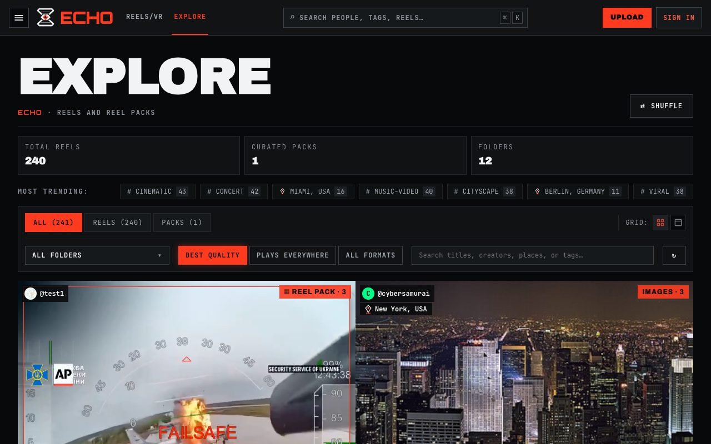
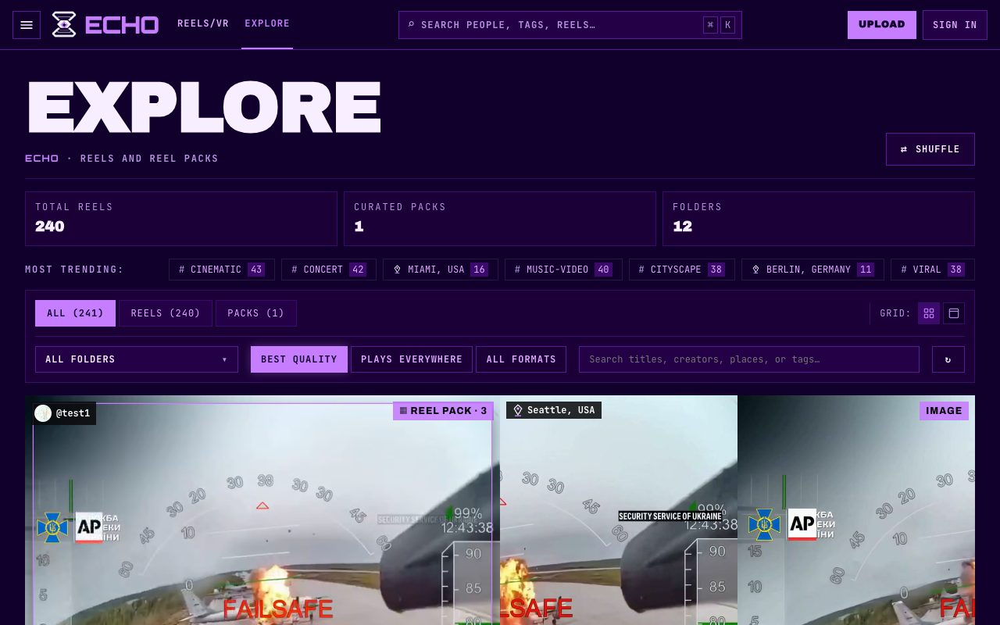
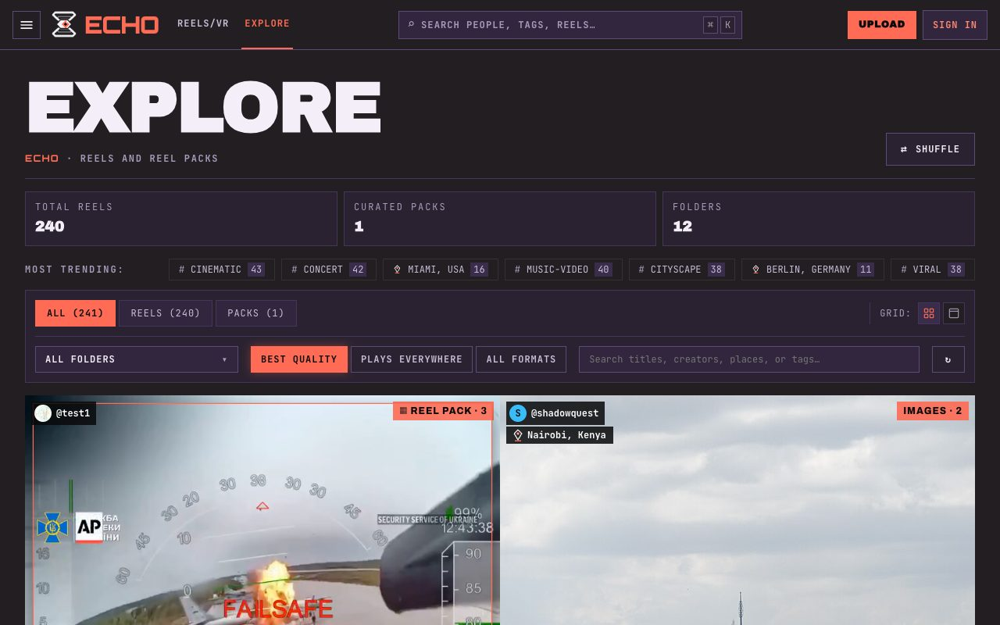
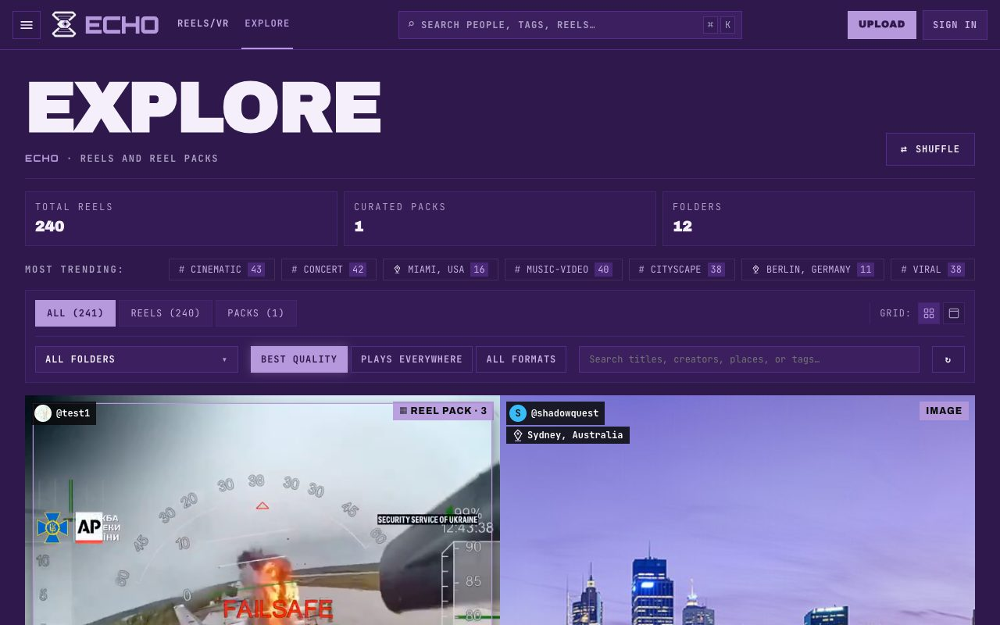
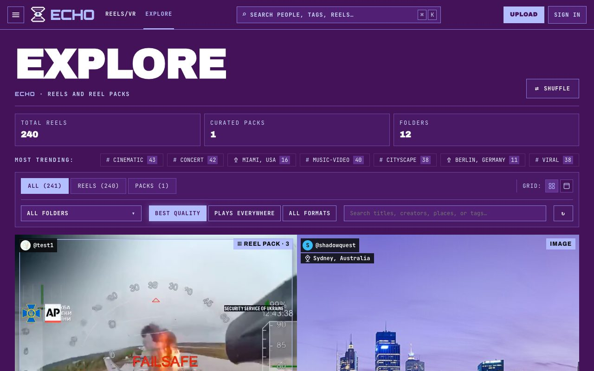
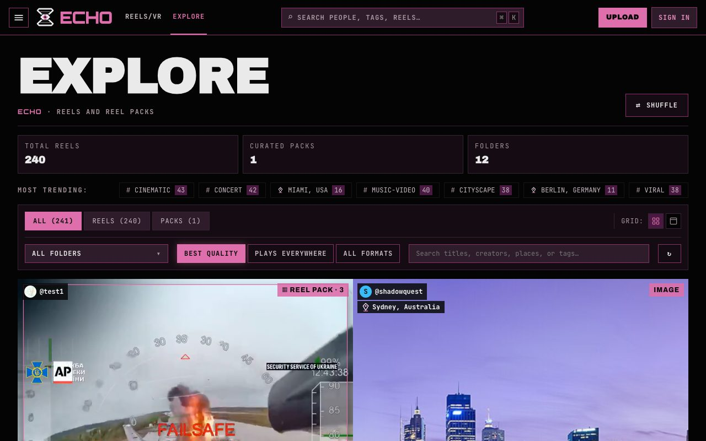
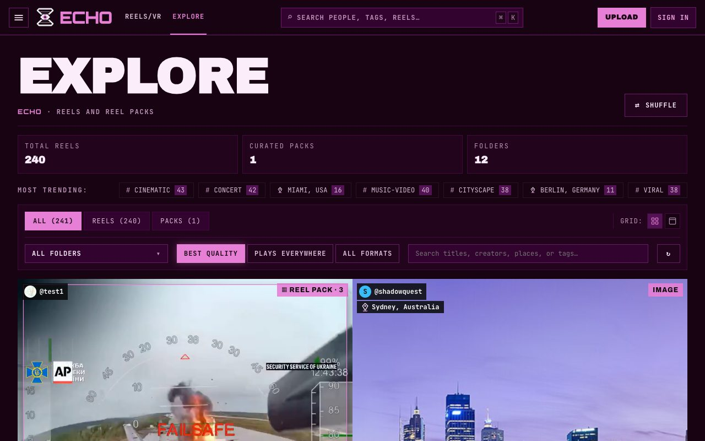
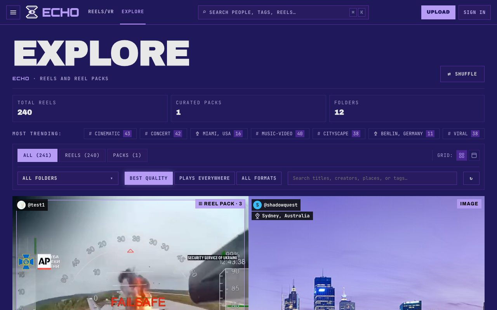
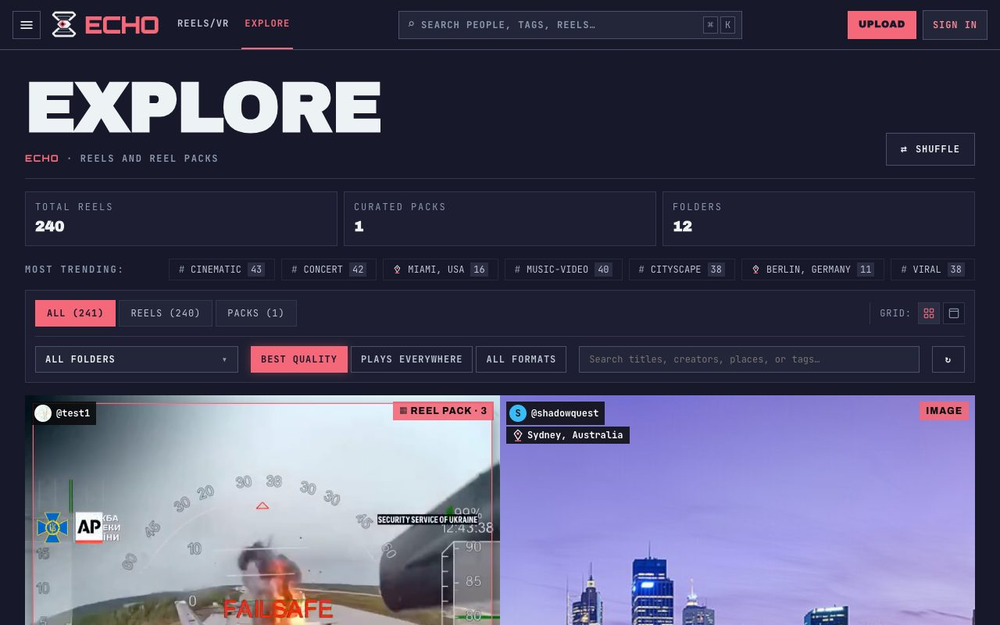
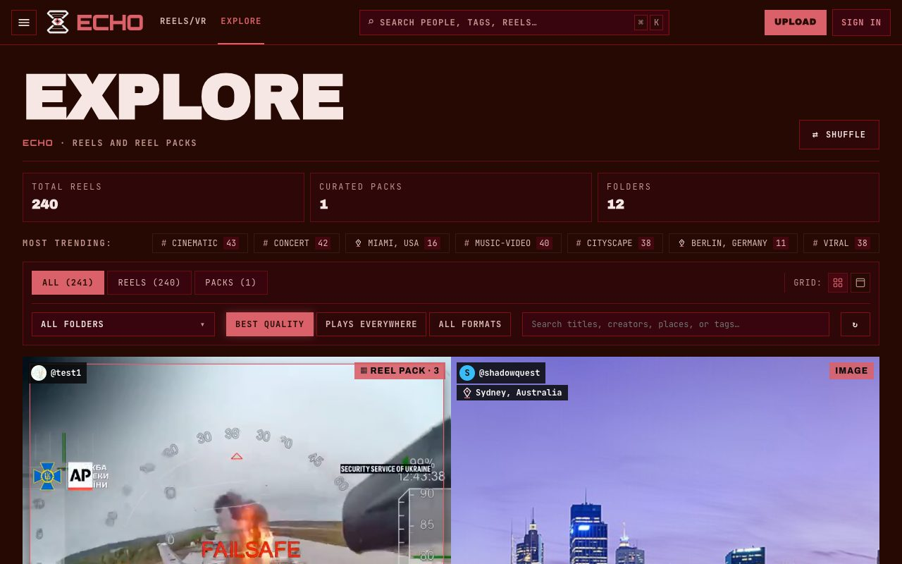
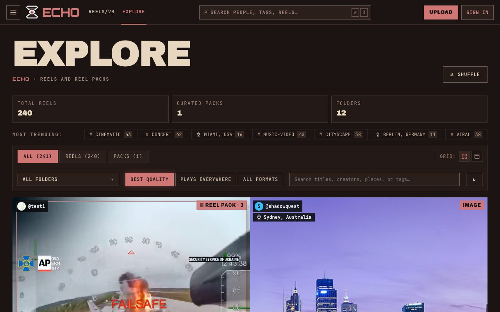
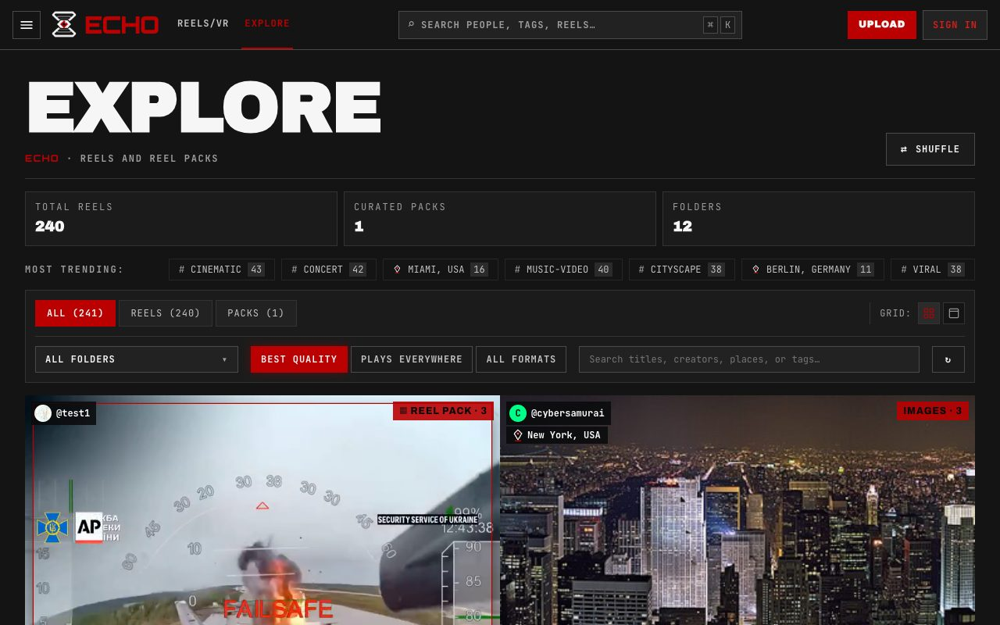
| Palette | Ink on page | Ink-2 on card | Ink-3 on card | Accent on page | Accent on card | Accent, worst surface | Button text | Warning on card |
|---|---|---|---|---|---|---|---|---|
| Current | 17.9 | 7.6 | 5.8 | 5.5 | 4.9 | 4.5 | 5.5 | 10.9 |
| 1 · Violet ramp | 17.7 | 9.7 | 7.1 | 7.3 | 6.7 | 5.3 | 7.3 | 11.1 |
| 2 · Shadow plum | 14.3 | 7.9 | 5.4 | 5.8 | 5.0 | 4.5 | 7.0 | 8.8 |
| 3 · Lavender dusk | 13.7 | 6.9 | 5.4 | 6.2 | 5.4 | 4.5 | 6.2 | 8.3 |
| 4 · Periwinkle on plum | 14.2 | 10.3 | 8.5 | 7.9 | 6.5 | 5.1 | 7.9 | 7.2 |
| 5 · Wine noir | 17.0 | 8.7 | 5.7 | 6.8 | 5.2 | 4.6 | 6.8 | 9.8 |
| 6 · Mulberry | 17.6 | 10.4 | 6.7 | 7.9 | 7.0 | 5.3 | 7.9 | 10.9 |
| 7 · Indigo night | 12.7 | 8.7 | 6.2 | 6.7 | 6.4 | 4.6 | 6.7 | 9.2 |
| 8 · Slate red | 15.5 | 8.7 | 5.2 | 5.9 | 5.0 | 4.5 | 5.9 | 9.3 |
| 9 · Oxblood | 15.6 | 10.0 | 6.7 | 5.2 | 4.9 | 4.5 | 5.2 | 10.9 |
| 10 · Cocoa brick | 12.8 | 8.3 | 5.0 | 5.6 | 4.9 | 4.5 | 5.6 | 9.9 |
| 11 · Graphite red | 17.0 | 9.1 | 5.9 | 2.7 | 2.3 | 2.0 | 6.2 | 9.8 |
Ratios are rounded down. "Card" is --sx-surface-2; "worst surface" is the lowest over page, card, raised card, hover and top card, which is where the design system sets the bar. "Warning" is the unchanged --sx-warn yellow, used for chips like DEMO PROFILE. Each lifted accent was tuned to land just above 4.5:1 on the top card, so it stays as close to the source colour as the rule allows.
Best contrast of the set, cleanest surface steps, and it needs no extra fixes. The lavender buttons with dark text read as one system.
Same near-black page, so photos and video still pop; only the accent and card tint change. Needs the lifted accent, not the raw #893168.
Equally readable. The derived pink accent is the one choice here not taken from the palette.
Same lavender accent, but on a bluer, lighter page with grey instead of lilac text. Calmer; slightly less contrast for body text (12.7:1 against Violet's 17.7:1), still well above the bar.
Graphite is today's look with a deeper red, but its raw accent is too dark for red text; Slate adds a cool blue cast. Both keep photos neutral. Any red accent sits near the danger colour, so errors stand out less.
Plum barely changes the brand. Periwinkle turns every page purple and Oxblood every page deep red, which may tire on long sessions. Lavender dusk and Cocoa brick are soft, low-energy options.
| File | What it does |
|---|---|
web/src/dev/palettes.css | One block per palette that re-points the --sx-* colour tokens. Also re-skins the header, popovers and empty states that hard-code the old near-black, and the SVG icons that carry fill="#ff3b1f". |
web/src/dev/palettePreview.js | Reads ?palette=, sets data-palette on <html>, keeps the choice in sessionStorage, and adds the corner picker. It also points the ~40 hard-coded vermilion rgba(255, 59, 31, …) glows in global.css at the active accent. |
web/src/main.jsx | Loads the preview module only when import.meta.env.DEV, so production builds never include it. |
scripts/capture_palettes.cjs | Re-takes all 48 screenshots into docs/palette-test/img, or only the palettes named on the command line. Needs Vite on :5173 and the API on :8000. |
To ship one palette for real: copy its block into tokens.css, replace the hard-coded vermilion and near-black values in global.css with tokens, then delete web/src/dev.